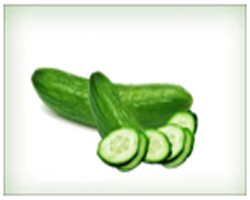

အမာရြတ္ ႏွင့္ အမည္း စက္ မ်ားအတြက္ မ်က္ ႏွာဖံုးျပဳလုပ္ နည္း


၁။ သခြားသီးကို ျခစ္တံႏွင့္ ျခစ္ျပီး ဝက္သစ္ခ်မႈန္႔ႏွင့္ အေရာင္ခၽြတ္ပါ။
ဒိန္ခ်ဥ္ လက္ဘက္ရည္ဇြန္း တစ္ဇြန္းႏွင့္ ေရာေမႊကာ မ်က္ႏွာတြင္ လိမ္းပါ။
၁၀မိနစ္ ေလာက္ၾကာရင္ ေရေအးႏွင့္ ေဆးပါ။
ပံုမွန္ ျပဳလုပ္ေပးပါက အသားအေရ စိုေျပ ေခ်ာေမြ႕ျပီး ဝက္ျခံမ်ား ေပ်ာက္ကင္း သြားပါလိမ့္မယ္။
၂။ သခြားသီးကို ျခစ္တံႏွင့္ျခစ္ျပီး အရည္ညွစ္၊ သၾကား လက္ဘက္ရည္ဇြန္း ၁ ဇြန္းႏွင့္ ေရာျပီး မ်က္ႏွာ၊ လည္ပင္းတို႔တြင္ လိမ္းပါ။
၁၅မိနစ္ ေလာက္ဆို ေရေအးႏွင့္ ေဆးလို႔ရပါျပီ။
ဒီနည္းကေတာ့ ေခၽြးေပါက္ေတြကို ပိတ္ေစပါတယ္။
၃။ ဘီယာ ခ်က္ရာတြင္ သံုးေသာ တေစး လက္ဘက္ရည္ဇြန္း ၁ ဇြန္းကို ဒိန္ခ်ဥ္ လက္ဘက္ရည္ဇြန္း ၁ ဇြန္းႏွင့္ ေရာျပီး မ်က္ႏွာတြင္ လိမ္းပါက အစက္အေပ်ာက္မ်ား ေပ်ာက္ကင္း သြားပါလိမ့္မယ္။
တစ္ရက္ျခား တစ္ၾကိမ္ ႏွစ္လျပဳလုပ္ျပီး တစ္ၾကိမ္တြင္ မိနစ္၂၀ခန္႔ထားပါ။

၄။ ျပဳတ္ထားေသာ မုန္လာဥနီကို ေက်ေအာင္ေျချပီး မ်က္ႏွာတြင္လိမ္းပါ။
ေျခာက္သြားသည္ အထိေသာ္၄င္း၊ မိနစ္၂၀ခန္႔ေသာ္၄င္းထားျပီး ႏြားႏို႔ႏွင္ ဦးစြာ ေဆးပါ။
ျပီးမွ ေရေအးႏွင့္ ေဆးပါ။
ဒီနည္းက ဝက္ျခံေၾကာင့္ျဖစ္တဲ့ အမာရြတ္ေတြ၊ အေပါက္ငယ္ေတြ ေလ်ာ့ပါးေပ်ာက္ကင္း ေစႏိုင္တဲ့ နည္းေကာင္းတစ္ရပ္ျဖစ္ပါတယ္။

၅။ သံပုရာရည္ လက္ဘက္ရည္ဇြန္း ၁ ဇြန္း၊ ပ်ားရည္ လက္ဘက္ရည္ဇြန္း ၁ ဇြန္းႏွင့္ ႏွင္းဆီနံ႔ ပါေသာ ေရ လက္ဘက္ရည္ဇြန္း ၁ ဇြန္းႏွင့္ ေရာျပီး မ်က္ႏွာ၊ လည္ပင္း တို႔တြင္ လိမ္းပါ။
ညတိုင္း လိမ္းျပီး မနက္မွ ေရႏွင့္ ေဆးပါ။
ေစးကပ္တယ္၊ (ပုရြက္ဆိတ္ကိုက္မွာေၾကာက္တယ္ :P)ဆိုရင္ မိနစ္၄၀ ေလာက္ပဲထားပါ။
၆။ အခြံခြာ၊ ျခစ္တံႏွင့္ ျခစ္ထားေသာ သေဘၤာသီးစိမ္းကို ညက္ေအာင္ ေခ် သို႔ ေမႊစက္ထဲ ထည့္ပါ။
မ်က္ႏွာ၊ လည္ပင္းတို႔တြင္ ထူထူေလးလိမ္းပါ။
မိနစ္၂၀ခန္႔ ၾကာေသာ္ ေရေဆးပါ။
၇။ ၾကက္ဆူဆီက အစြန္းခၽြတ္ရာမွာ နာမည္ၾကီးပါပဲ။
ၾကက္ဆူဆီကို အသံုးျပဳလိုေသာ ေနရာတြင္ စက္ဝိုင္းပံုသ႑ာန္ လက္ႏွင့္ လိမ္းပါ။
တစ္ေန႔ ႏွစ္ၾကိမ္ေလာက္ လိမ္းႏိုင္ပါတယ္။
ဓာတ္မတည့္ျခင္းမ်ား ျဖစ္ေပၚရင္ေတာ့ ဆက္မသံုးပါႏွင့္။
ဒါ့အျပင္ ကိုယ္ဝန္ေဆာင္ေနသူမ်ား မသံုးသင့္ပါ။
သဘာဝနည္းေတြကို အသံုးျပဳမယ္ဆိုရင္ စိတ္ရွည္ရပါမယ္။ တစ္ၾကိမ္တည္း၊ တစ္ခါတည္း အသံုးျပဳရံုနဲ႔ေတာ့ ထိေရာက္မွာမဟုတ္ပါဘူး။